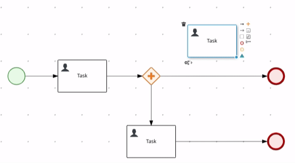
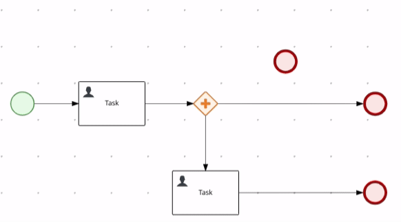
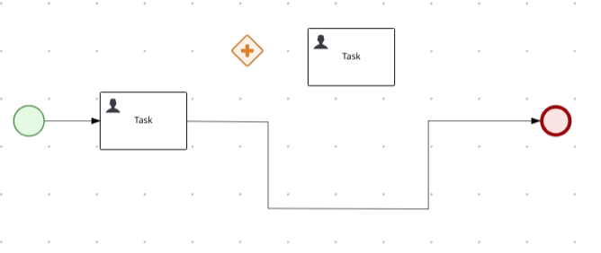
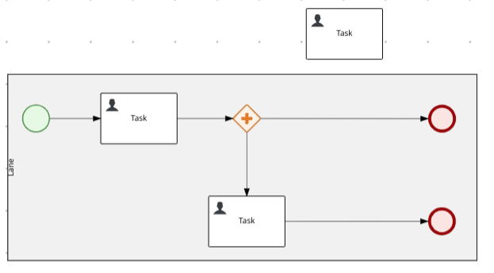

Automatic connections with Line Splicing
Line splicing is a feature available in BPMN and DMN editors that allows dropping a node on top of a connector in order to automatically split it into two connectors and perform the right connection assignments. This way, the authoring process gets smoother and more intuitive once the user doesn’t need to do the connections manually in order to insert nodes between other connected nodes anymore.
When a node is being dragged over a connector, the connector highlight provides feedback if line splicing can be performed. It is only possible to perform this operation between two connected nodes and if the connection between the three nodes is allowed.
If the operation is allowed, the connector is highlighted in blue, and then if the node is dropped, the node connection is promptly executed.
E.g

Otherwise, the connector is highlighted in red, indicating that line splicing cannot be performed, and if the node is dropped at this moment, the node connection is not performed.
E.g.

Connectors with bend-points can be spliced as well. All bend-points are preserved when the line splicing is performed.
E.g.

Line splicing can be performed into containers such as Lanes and Sub-processes as well. Thus, if the connection and the containment is allowed the line splicing and also the containment are executed.
E.g.

This feature is fully integrated with the editors therefore authoring operations such as “Undo” and “Redo” are available as well.